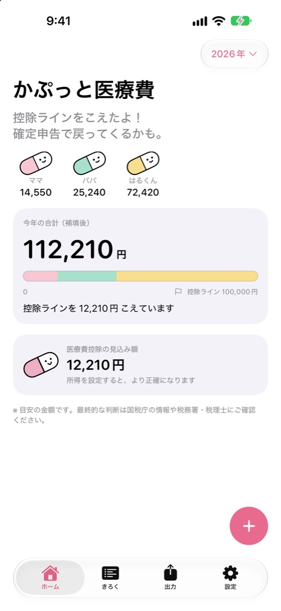
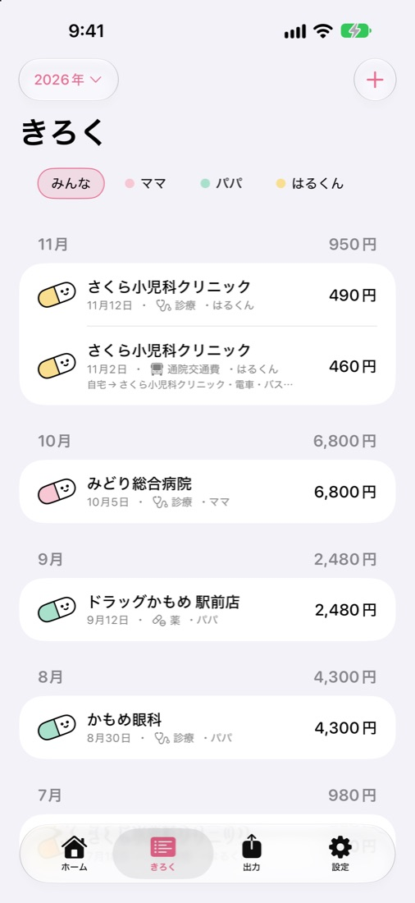
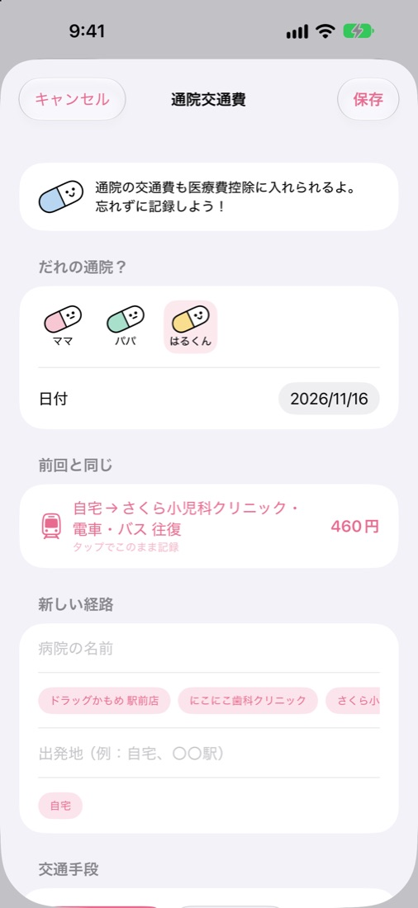
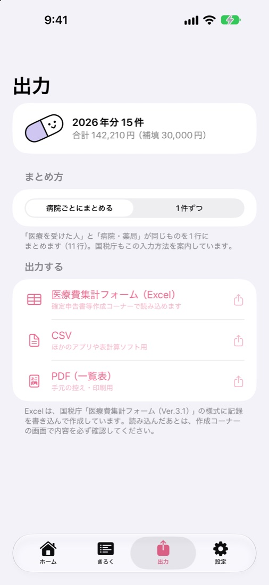

家族の医療費、
かぷっとまとめて
控除のチャンスに。
レシートを撮るだけで、病院名・金額・日付を読み取り。
家族みんなの医療費を色分けして記録して、
確定申告の書類までそのまま作れます。

医療費控除、こんなことで
あきらめていませんか？
集計する気になれない
だれの分かわからなくなる
そもそもわからない
医療費控除は、家族の分をまとめて申告できます。
子どもの通院や歯医者さん、通院の交通費も、積み重なると意外と大きな金額に。
記録から確定申告まで、
このアプリひとつで。
病院名・金額・日付を
自動で読み取り
だれの医療費か
ひと目でわかる
10万円まで、あといくらか
バーで確認
よく使う経路は
1タップで記録
医療費集計フォーム（Excel）
・CSV・PDF
ExcelやCSVの記録を
まとめて移せる
かぷっと医療費の特長
控除ラインまで、
あといくら？がすぐわかる
1年の医療費が10万円（所得200万円未満の方は所得の5%）をこえると、医療費控除が受けられます。ホームの進み具合バーに、家族の色が積み重なっていきます。こえたら、控除の見込み額もお知らせ。

レシートを撮るだけ。
家族ごとに色分け。
病院や薬局のレシートを撮ると、文字を読み取って入力します。ちがっていたら、文字をタップして直せます。家族ごとにカプセルの色が決まっているので、だれの分かが迷いません。
- レシートの写真は控えとして保存
- よく行く病院は候補からすぐ選べる

忘れがちな
通院の交通費も、ちゃんと。
病院の記録を保存すると「交通費も記入しますか？」とお知らせ。一度入れた経路は覚えておくので、2回目からはタップ1回で記録できます。運賃はAppleマップ・Googleマップで調べられます。

確定申告の書類も、
そのまま作れる。
国税庁の「医療費集計フォーム」（Excel）の形で出力できるので、確定申告書等作成コーナーに読み込めます。正式な氏名は出力するときだけ聞くので、ふだんは「ママ」「はるくん」の呼び名でOK。
- CSV・PDF（一覧表）でも出力できます
- 病院ごとにまとめる・1件ずつ、を選べます
大切な医療の記録だから、
iPhoneの中だけに。
記録もレシート写真も、すべてあなたのiPhoneの中だけに保存されます。
メールアドレスやパスワードの登録は不要。開いてすぐ使えます。
機種変更のときも、バックアップファイルから元に戻せます。